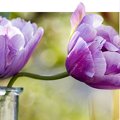
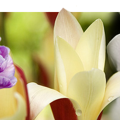
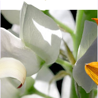
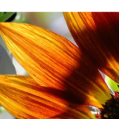

-  10.00$
-  15.00$
-  12.00$
-  20.00$
Flowers in my garden
Purple Tulip
The uilip is the national flower of leran and Turkey, and tulip motifs feature prominently in Persian and Turkish folk arts.
The European name for the flower comes from the Persian word for turban, a origin probably originating in the common Turkish custom of wearing flowers in the folds of the turban.
Lily
Martagons appreciate some shade, and are quite decorative in the woodland garden.
Along with the earliest of the asiatics, blooms another entirely different group called the martagons, or martagons hansonii hybrids. These are tall lilies with many little down-facing flowers and whorled leaves.
Pear blossom
Pears are native to temperate regions of the Old World, from western Europe and north Africa east right across Asia.
The flowers are white, rarely tinted yellow or pink, 2-4 cm diameter, and have five petals. Like that of the related apple, the pear fruit is a pome, in most wild species 1-4 cm diameter.
Sunflower
While the vibrant, strong sunflower is a recognized worldwide for its beauty, it is also an important source of food.
Sunflower oil is a valued and healthy vegetable oil and sunflower seeds are enjoyed as a healthy, tasty snack and nutritious ingredient to many foods.